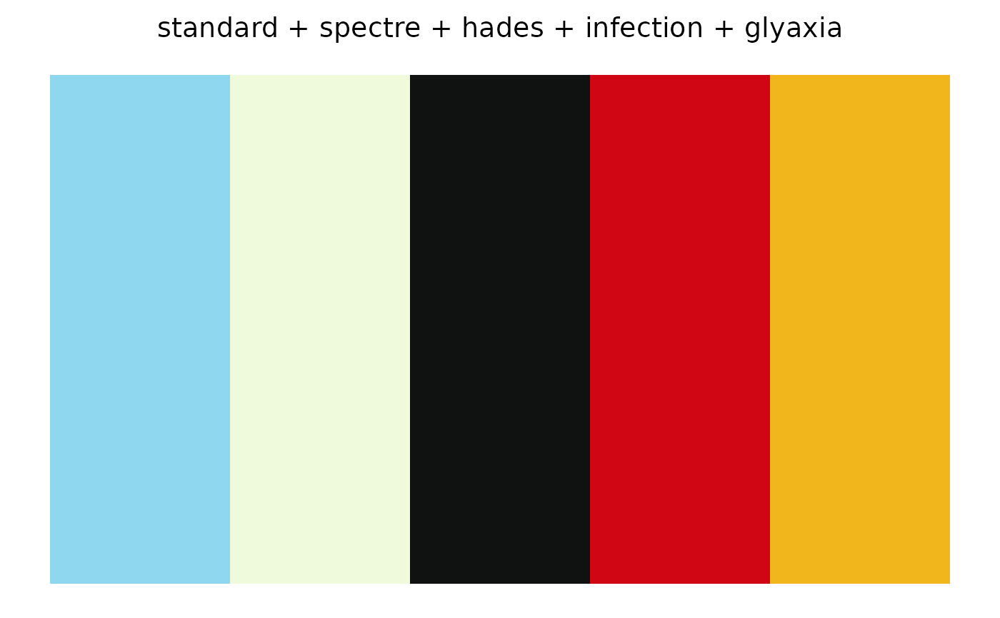
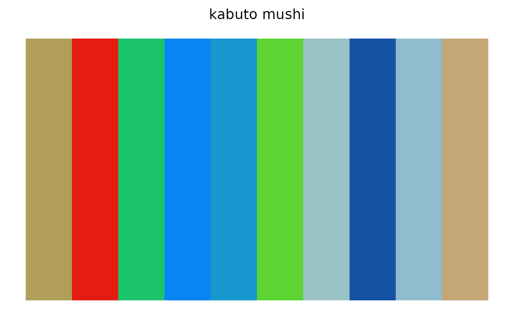
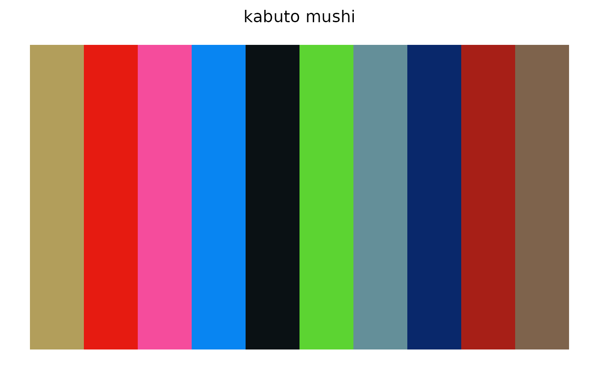
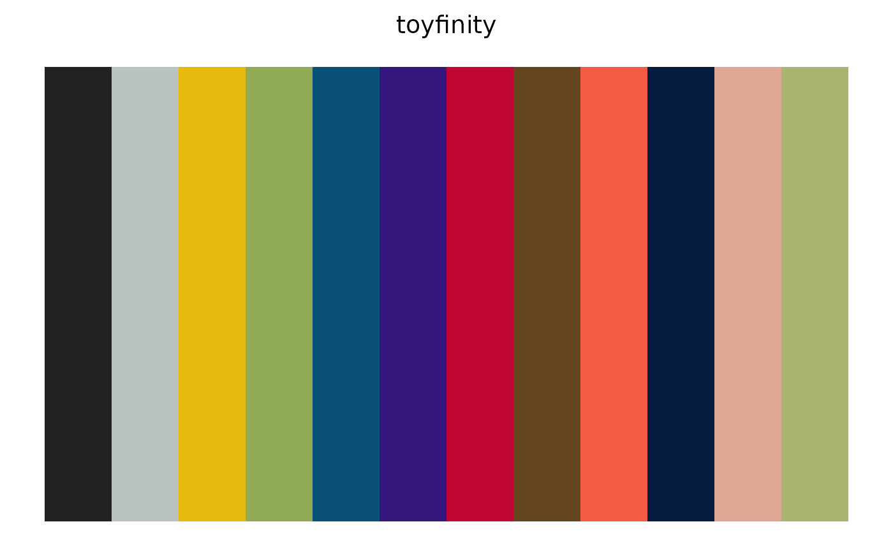
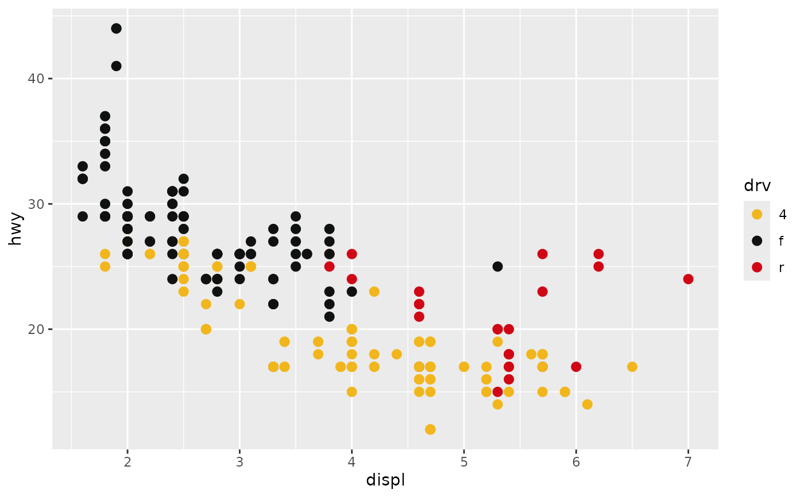

Takes one color from each named palette, or from every palette of a company or product line, and returns them as a single categorical palette named by the colorway each color came from. This is the quick way to get "one color per Kabuto Mushi" or "one color per Battle Tribes figure".
Arguments
- palettes
Character vector of palette names; see
glyos_palette_names(). May be omitted whencompanyorlineis given.- company, line
Optional filters passed to
glyos_palette_names(); every matching palette contributes one color.- which
Which color to take from each palette (1 is the main plastic color). Palettes with fewer colors contribute their last one.
- distinct
Logical. Choose each palette's contribution to be as different as possible from those already chosen, instead of position
which?
Value
A named character vector of hex colors with class
"glyos_palette", one per palette, in the order of palettes or of
glyos_palette_names(). Pass unname()d to
ggplot2::scale_colour_manual().
Details
By default the first color of each palette is used, which is the main
plastic color and so is faithful to each figure but can repeat across a
line cast from shared plastics. distinct = TRUE instead picks, for each
palette in turn, the color from that palette that is farthest (in CIE
Lab) from the colors already chosen, which keeps the result legible on a
chart at some cost to fidelity. For a stricter selection that also drops
colors with poor contrast against the background, see glyos_pick().
Examples
glyos_combine(c("standard", "spectre", "hades", "infection", "glyaxia"))
#> Glyos combined palette 'standard + spectre + hades + infection + glyaxia' (5 colors)
#> standard = #8ED7EE
#> spectre = #EEFADA
#> hades = #0F1210
#> infection = #D00615
#> glyaxia = #F2B61D

glyos_combine(line = "Kabuto Mushi")
#> Glyos combined palette 'kabuto mushi' (10 colors)
#> kabuto_standard = #B29E5B
#> kabuto_infection = #E61B11
#> kabuto_radioactive = #1BC46A
#> kabuto_glyaxia_clone = #0885F2
#> kabuto_scarabite = #1698CF
#> kabuto_xenoglow = #5CD432
#> kabuto_cerulestar = #99C2C5
#> kabuto_bioberry = #1753A5
#> kabuto_luna = #8FBDCE
#> kabuto_sectivorus_supreme = #C4A679

glyos_combine(line = "Kabuto Mushi", distinct = TRUE)
#> Glyos combined palette 'kabuto mushi' (10 colors)
#> kabuto_standard = #B29E5B
#> kabuto_infection = #E61B11
#> kabuto_radioactive = #F54C9C
#> kabuto_glyaxia_clone = #0885F2
#> kabuto_scarabite = #0A1114
#> kabuto_xenoglow = #5CD432
#> kabuto_cerulestar = #648F99
#> kabuto_bioberry = #09286B
#> kabuto_luna = #A71F17
#> kabuto_sectivorus_supreme = #7E634C

glyos_combine(company = "Toyfinity", which = 2)
#> Glyos combined palette 'toyfinity' (12 colors)
#> rf_maxx_zero = #242123
#> rf_hun_dred = #B9C3BE
#> rf_sentinel = #E6BA0F
#> rf_wrecker = #91AB54
#> rf_vanguard = #0A5178
#> rf_cruel = #34167D
#> rf_brutal = #C00633
#> rf_nazgar = #65451F
#> mordles_jumbo = #F55B43
#> zeroids_zerak = #051C41
#> zeroids_zobor = #DEA793
#> manglors_manglord = #A8B46F

library(ggplot2)
ggplot(mpg, aes(displ, hwy, color = drv)) +
geom_point(size = 2.5) +
scale_colour_manual(values = unname(glyos_combine(c("glyaxia", "hades", "infection"))))
